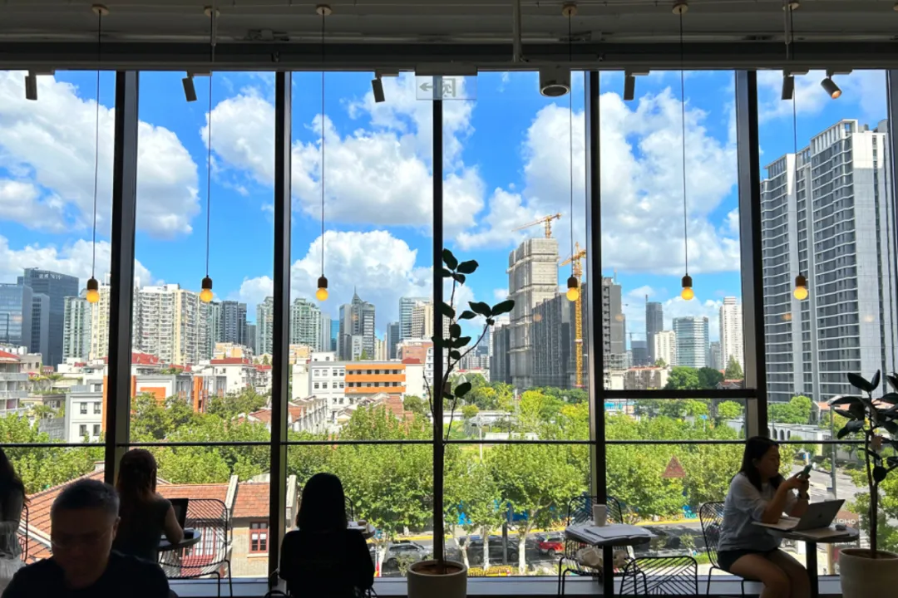
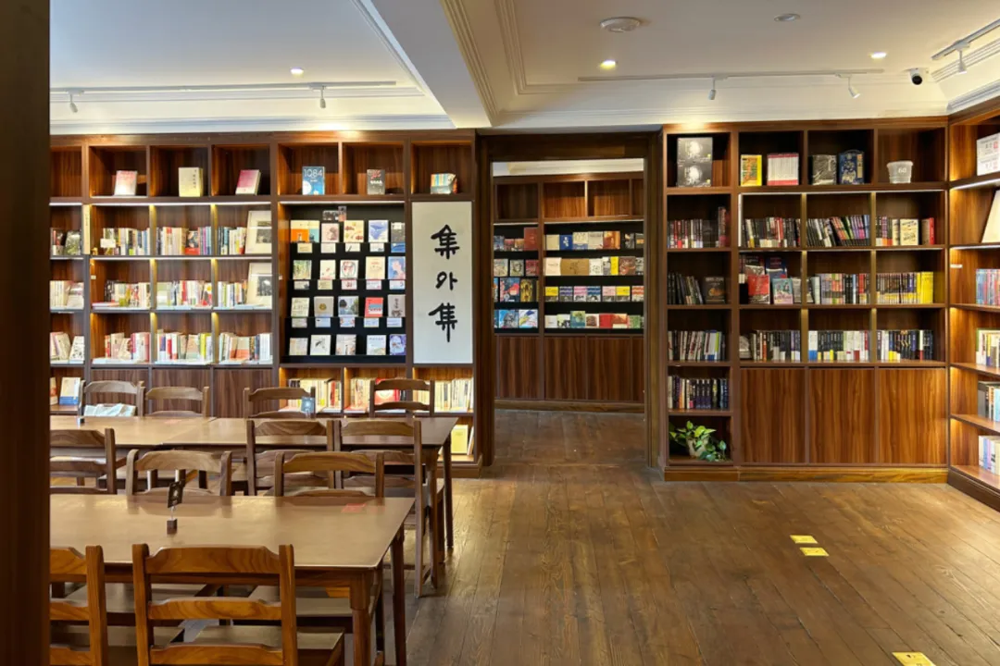
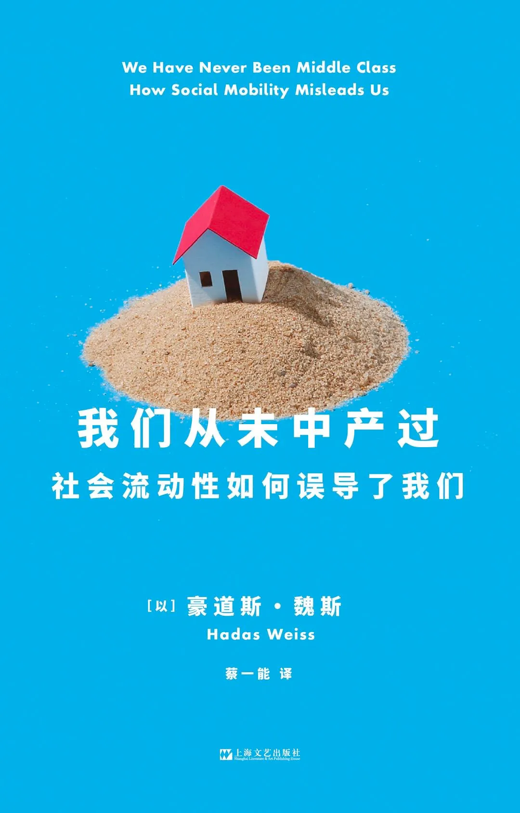
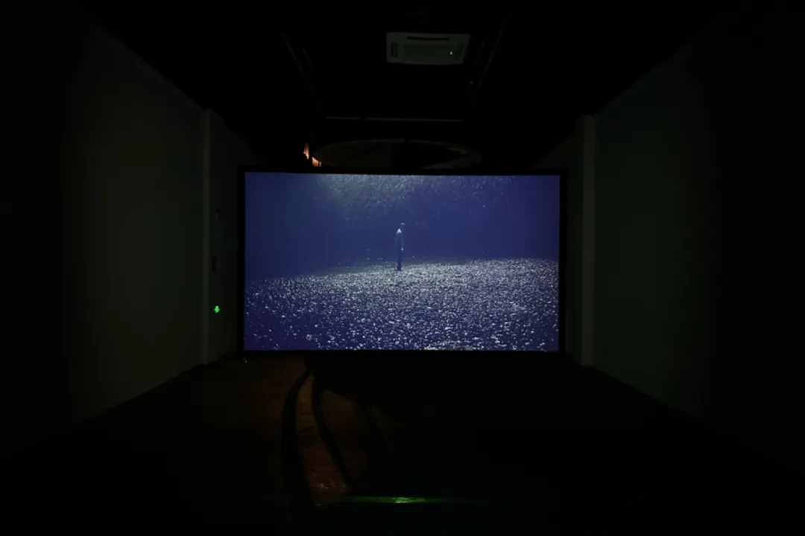
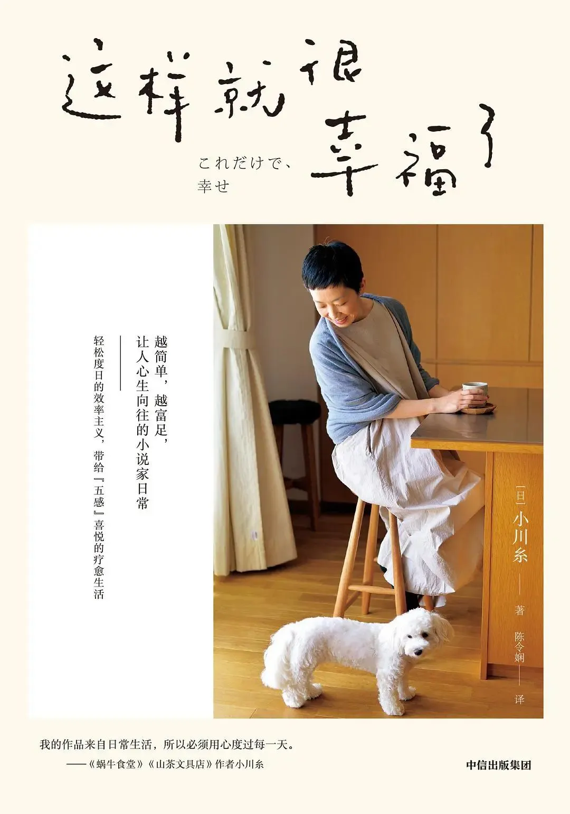

去内山书局
9月15日，中秋假日的第一天，台风将至的日子。
在小红书上搜索中秋假期里上海的分享会和展览活动，找到一个关于《我们从未中产过》的圆桌在多伦美术馆。刚好就在内山书局的附近，便准备去内山打发下午的时间。
内山书局大部分的书都没有拆封，并且对我胃口的也没那么多。于是就挑了一本已经拆封的《我的爱情观》来看。这本书很轻松，有些说法过于简要，以至于给人有刻板印象的理解，2小时就读完了。这个下午，书店的人很少，自习区也始终没有坐满。即使木椅子坐着硬邦邦的，也还是坚持待到了傍晚。来了两次，经过鉴定，这里并不适合长久驻扎。

书里李银河认为，爱情发生的条件有3个，一是肉体吸引，二是精神吸引，三是时机或缘分。
单独看这个说法，我也挺认同。就我和对象而言，我们在肉体层面上，拥有对方喜欢的特征；基于学历与阅读的基础，在精神世界上也有许多共识，以及碰撞的空间；在相遇的时候，我们已经对自己喜欢且适合什么样的人有了清晰的认知，并且能够接受长时间的异地状态，故也算是好的时机。从这三个角度来看，算是在对的时间遇到了对的人。
因为台风的缘故，书店提前到17:00打烊，只能转到多伦美术馆旁边的全家便利店去等19:00分享会的开始。

我是冲着《我们从未中产过》这本书来分享会的。书里不少内容其实呼应了《精英的傲慢》，中产阶级这个边界模糊的概念，更多的是像一种安顿人的意识形态。从通过个人努力决定命运，通过消费主义体现个性，到通过文化品位试图做出身份区隔的种种表现里，可以看到自认为中产的群体，做出的种种努力。他们愈发政治冷感，这带来社会相对平稳。他们警惕坠落，这带来再生产领域的消费动力。但这更多的是一种群体认同，其实并不意味着界限分明的阶级地位。

但是分享会的核心内容，其实并没有围绕这本书展开。反而是围绕着嘉宾中的一位18岁从武汉去欧洲学习的年轻艺术家的作品讨论得太多。但是她对于武汉钢铁厂的历史、阿拉伯婆婆纳以及个人家庭史的探究，并不那么让我感兴趣，耐着性子听完就走了。也许是因为台风的缘故，来参加分享会的只有七八个人。也许是这种艺术圆桌活动，还是小众了些。
这一天最大的收获，就是内山书局旁边的福福饼屋和马路斜对面的老字号馄饨，锅贴、馄饨味道不错，物美价廉。在上海，真需要多保留一些这种社区感很强的实惠馆子。否则，印象中都是那些光鲜精美的Brunch，丧失了工人群体生活本真的样貌。
去茑屋书店
9月17日，我想着假期的最后一日，台风过境，天气恢复了燥热与晴空，茑屋书店的巨大落地窗的风景应该会很不错吧，昨天在家看了《回忆中的玛妮》，小女孩抄捷径从山上跑到海边的画面，跟枸杞岛很相似，其他时间干了些什么？想不太起来了。于是觉得还是不在家中昏昏度日了，出来看看杂志也不错。
绿化带有不少树被连根拔起，但是道路边的垃圾基本已经被清空，只经过半日，清洁工人就完成了大量的修复工作，真是高效率啊。这样破坏性的台风，确实头一次见，难怪整个城市的人都如临大敌。
中午刚睡醒的时候跟妈妈视频聊了会儿天，妈妈絮叨着，街坊说家人不在老家常待，重装了厨房也是给租房的人家用了，租房的人家也不会多么爱护东西，没这个必要，还费钱，等你们回来常住了再装修也行。她的口吻有点劝说且不那么坚定的感觉，好像在征求我的意见。这样的反复考虑、衡量性价比的时刻，从小就有很多，只是那些时候，我并不是一个商量决策的对象。如今看来，我逐步进入了这个家庭事务的评审会，可以逐渐释放我的主见，甚至未来也许还要引领家庭的走向。
但我对租房的人不会爱护橱柜，这一点不那么确定。我前一日刚交完最新2个月的房租，哪怕是在这个屋子的墙上增加一个挂钩，我都要思考再三，最终还是选择了不会留下痕迹的品种。我尽量不改变这个屋子的任何设施，在有限的范围内去改善它，成为舒适的样子。
我同时是这样的租客和房东的女儿。
我以为中秋节的当日，书店许会冷清，大抵只有一些都市独居人士才会来书店，结果不少家庭带娃来看书或写作业，空位鲜少。第三次在同一个位置见到了那对儿像是教育工作者的中外伴侣，ta俩成为了我在茑屋书店的一种Routine。
看江鹅的《俗女日常》，有一篇散文题目叫“人权底线”。想到了前一日的睡前电话里，跟对象讨论想要什么样的生活以及如何看待是否要润，这对我来说其实就是一个关于人权的问题。
我说，我想要生活是——有尊严的生活，然后临时推论出3个角度：一是物理意义上的有尊严，那就包含了能否不极度压缩生活质量就能获取相对舒适、有质量的生活空间，这个空间包含了城市与家居空间，你想生活的城市的房价能够让你不牺牲六个荷包与生活质量就能负担得起吗？你接受长达1-20年的租房住，以换取相对较好的生活质量吗？接下来如果涉及到生育，那么还要考虑学区房的成本，这些难以隔离的东西，你乐意承担且能够承担吗？这些是我评估一种生活的角度。二是精神意义上的有尊严，活在一个尊重人，把人当人看的地方，比如同事不会在下班后或休息日里随意打扰你，加班不是常态，放假不用调休等等，人不会那么被工具化，如果现在生活的环境是这样，那么短期有改良的趋势吗？这是很重要的一个方面。三是对弱者有人文关怀，其实第二点的出发点都是自己作为一个有生产力的年轻群体的视角来看的，这时候的人可以被称之为人力资源，但是人总有成为弱者的时候，年老、女性婚育等等，这些都会让你成为一个很明显的弱者，那么对应的福利制度健全吗？弱者能够被尊重、权益能够被保障吗？这些或许可以成为一个衡量条件。我是从这三个角度来看待，你要不要去国外生活的。当然，这些想法不一定说得上成熟，未来也许还会改变。

茑屋书店有好多本小川糸的书，我翻完了《这样就很幸福了》，书里小川糸的简单闲适的作家生活，确实让人感到平静，但要实现却不容易。“轻松度日的效率主义，带给五感喜悦的疗愈生活”，是很符合我所期待的生活理念，也可以逐步践行着。
三天假期很快就过去了，紧接着的是高强度工作的三个工作日。这三天每天早晨我都默念：生活很简单，工作也很简单，别追问那么多意义，简单活着。
感觉很有效果，这几天内耗都少了很多。